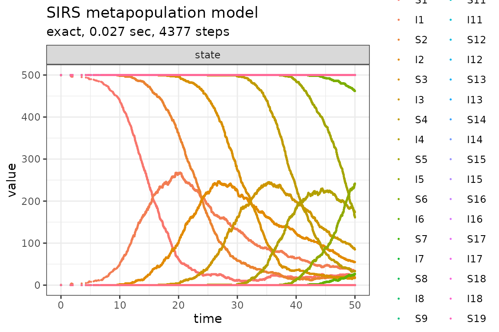
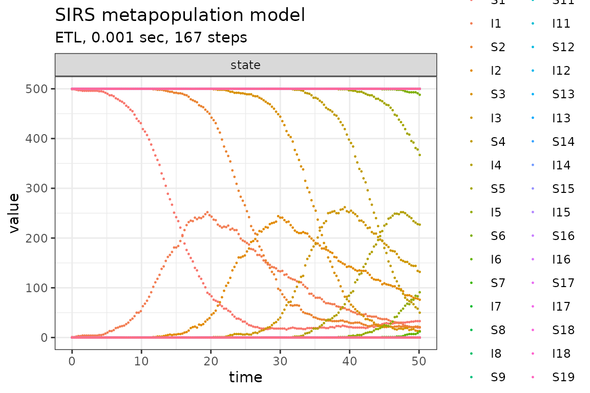
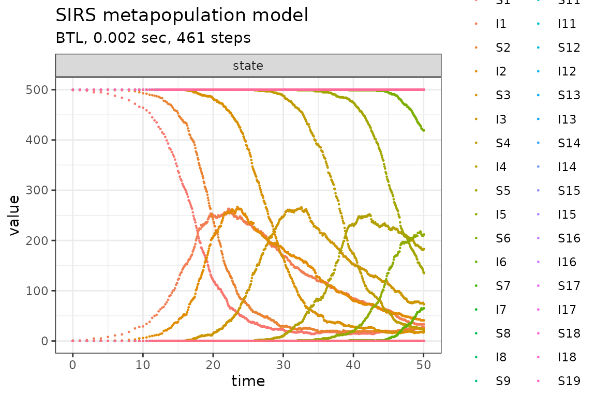

The SIRS epidemiological metapopulation model is defined in Pineda-Krch (2008).
Define parameters
library(GillespieSSA2)
sim_name <- "SIRS metapopulation model"
patchPopSize <- 500 # Patch size
U <- 20 # Number of patches
final_time <- 50 # Final time
params <- c(
beta = 0.001, # Transmission rate
gamma = 0.1, # Recovery rate
rho = 0.005, # Loss of immunity rate
epsilon = 0.01, # Proportion inter-patch transmissions
N = patchPopSize # Patch population size (constant)
) Create the named initial state vector for the U-patch system. The
structure of initial_state is as follows (assuming a
patchsize of 500 individuals),
initial_state <- c(
S1 = 499, I1 = 1,
S2 = 500, I2 = 0,
S3 = 500, I3 = 0,
...
S20 = 500, I20 = 0
)
initial_state <- c(patchPopSize - 1, 1, rep(c(patchPopSize, 0), U - 1))
names(initial_state) <- unlist(lapply(seq_len(U), function(i) paste0(c("S", "I"), i)))Define the state change matrix for a single patch
reactions <- unlist(lapply(
seq_len(U),
function(patch) {
i <- patch
j <- if (patch == 1) U else patch - 1
Si <- paste0("S", i)
Ii <- paste0("I", i)
Ij <- paste0("I", j)
list(
reaction(
propensity = paste0("(1 - epsilon) * beta * ", Si, " * ", Ii),
effect = setNames(c(-1, +1), c(Si, Ii)),
name = paste0("intra_patch_infection_", i)
),
reaction(
propensity = paste0("epsilon * beta * ", Si, " * ", Ij),
effect = setNames(c(-1, +1), c(Si, Ii)),
name = paste0("inter_patch_infection_", i)
),
reaction(
propensity = paste0("gamma * ", Ii),
effect = setNames(-1, Ii),
name = paste0("recovery_from_infection_", i)
),
reaction(
propensity = paste0("rho * (N - ", Si, " - ", Ii, ")"),
effect = setNames(+1, Si),
name = paste0("loss_of_immunity_", i)
)
)
}
), recursive = FALSE)Run simulations with the Exact method
set.seed(1)
out <- ssa(
initial_state = initial_state,
reactions = reactions,
params = params,
final_time = final_time,
method = ssa_exact(),
sim_name = sim_name
)
plot_ssa(out)## Loading required namespace: ggplot2
Run simulations with the Explict tau-leap method
set.seed(1)
out <- ssa(
initial_state = initial_state,
reactions = reactions,
params = params,
final_time = final_time,
method = ssa_etl(),
sim_name = sim_name
)
plot_ssa(out)
Run simulations with the Binomial tau-leap method
set.seed(1)
out <- ssa(
initial_state = initial_state,
reactions = reactions,
params = params,
final_time = final_time,
method = ssa_btl(),
sim_name = sim_name
)
plot_ssa(out)